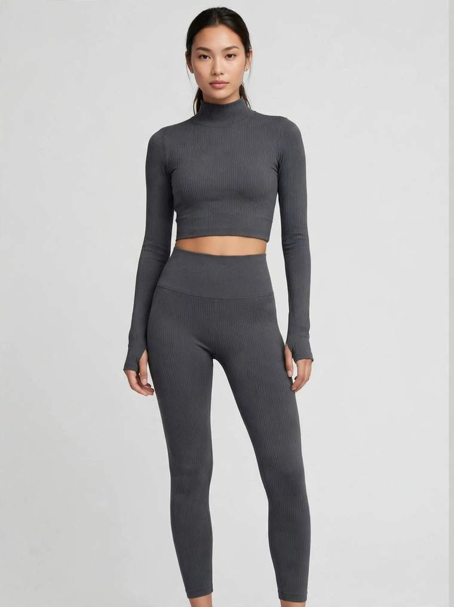

An athleisure set is the hardest-working product in a women's label: it is worn to the gym, to the school run, on a flight and on the sofa — and it is washed more often than almost anything else your customer owns. As a custom athleisure manufacturer in Sialkot, Pakistan, we make matching sets — sports bras, leggings, crop tops, joggers and zip-ups — for boutiques, online labels, gyms and studios, and the sets that sell out are the ones where the buyer chose the fabric and the fit before asking for a price.

A set is not one product, it is a combination, and each combination suits a different customer. The classic pairing is a sports bra with a high-waist legging; swap the legging for a jogger and you have a lounge set, add a zip-up top and it becomes an all-season training set. Decide the combination before you talk fabric, because each piece behaves differently: a legging needs firm recovery, a bra needs stable support, a jogger needs a soft hand feel. Our women's fashion and athleisure range covers sports bras, leggings, gym sets and lounge sets, so a set can be ordered as two pieces or built up into a full collection around one fabric and one colour story.
Fabric is where an athleisure order is won or lost, so choose it for how the set will actually be used. Cotton-spandex is soft and breathable — the right choice for lounge sets and everyday wear, though it absorbs moisture rather than moving it away. Polyester-spandex wicks sweat, holds its shape through hard training and dries quickly — the workhorse for gym sets. Nylon-spandex has the smoothest, most premium hand feel and excellent four-way stretch, which is why it is often chosen for higher-priced leggings and bra tops. Whichever you choose, confirm three things in writing before sampling: the fibre blend, the stretch and recovery (the fabric must snap back, not stay baggy), and the opacity — a legging that looks fine standing still and turns sheer in a squat is one your customer will send back. Ask for a fabric swatch before the sample is cut, stretch it hard, hold it to the light, and wash it once.
Athleisure fails more often on fit than on anything else, because one order has to fit customers of very different builds and the fabric is doing half the work. Agree the size chart with your manufacturer — waist, hip, inseam and rise for leggings; under-bust, bust and strap length for bras — rather than assuming retail sizes, which vary between brands and countries. Decide the rise, the legging length and the bra support level on purpose: high-waist leggings stay in place during training, and light, medium and firm support suit yoga, training and high-impact work in turn. For a first order, ask for one fit sample in your most common size, usually medium or large, and try it on real people of different builds: check the waistband (does it roll or dig in?), the gusset and the rise (does it stay comfortable in a deep squat?), the bra band (does it ride up?) and whether the set still matches after movement. Keep the approved size chart on file — it makes every reorder faster.
Customers rarely notice good construction consciously — they notice when it is missing. Specify these details in your tech file or reference notes:
A set only looks like a set if every piece is the same colour, and that is harder than it sounds: a bra, a legging and a jogger in the "same" colour can drift apart if they are dyed in different batches or made from different fabric blends. Order the pieces of one set from the same fabric and the same dye lot, and confirm the colour against a physical reference — a Pantone code or a swatch — rather than a phone photo, because screens lie about colour. Solid dyeing suits clean, minimal sets; sublimation suits all-over prints and bold graphics, but only on polyester-rich fabrics; garment dyeing gives a softer, lived-in look for lounge sets. If your design uses a print, confirm the print position on the sample and wash it once.
MOQ — minimum order quantity — is the smallest production run a factory will make per style. Cutting and machine setup cost the same whether you make 15 pieces or 1,500, so factories set a floor. Our trial MOQ for athleisure is 15–50 pieces per style, and you can mix sizes within that quantity — so a new brand can launch its first set in a single colourway without buying stock nobody will wear. Start with one colourway and one set combination, confirm the fabric, the fit and the colour match, then add colours and pieces. That keeps the risk small and the reorder simple.
A custom athleisure set is only a private label product if it carries your brand and nothing else. We make to your design and sew in your own brand labels and size tags, with your packaging as instructed — polybags, stickers, hang tags and custom boxes on request. If you ask for it, we can also add a "Made in [your country]" tag; otherwise our standard "Made in Pakistan" tag is used. Send your label artwork early, together with the design — labels are produced alongside sampling, so they never hold up your bulk order.
Sampling turns your specification into a physical set you can hold, wear and wash. Send a tech file if you have one — measurements, fabric and blend, construction details and artwork positions. If you don't, a clear photo, your artwork file and a reference set you already own are enough to start. We quote exactly for that piece once we have seen the design — we never quote a sample price blind — then develop the sample in 7–10 working days and share photos for your approval. Then wear-test it properly: put the set on, train in it, wash it once, and check the stretch recovery, the opacity in a squat, the waistband, the bra support and whether the colour still matches across the pieces. Small corrections at this stage are cheap; the same correction after bulk production is not.
Good factories check twice: in-line, while production is running, and again as a final inspection before packing — measurements, stitching, print quality, labelling and count. For small orders, one piece from the production run can be sent to you for checking while the rest continues. You should still receive final quality-check photos before dispatch, so what arrives is what you approved. For larger orders, an independent pre-shipment inspection adds a documented check before the goods leave the factory — see our inspection services.
Plan backwards from the date your sets are actually needed. Sampling takes 7–10 working days. Bulk production time depends on the quantity and the finishes — a straightforward 50-piece run in one colourway moves faster than a large order across several colourways with sublimation prints and branded waistbands, because each finish adds a step. Add shipping time to North America or Europe by air (DHL/FedEx) or sea. Tell your manufacturer the date the sets are actually needed: a real deadline lets the factory plan the run properly.
Before you commit to any athleisure supplier, ask:
A serious factory answers plainly and asks to see your design before quoting — an exact quote is only possible once the piece itself is understood.
You don't need a finished tech pack or a big budget to begin — you need one set combination and a rough idea of the fabric feel you want. Send us your design, tech file or even a clear photo on WhatsApp at +92-339-5099397 or by email at safettech@outlook.com, and we will reply with an exact quote for that piece and a sampling plan — or use our contact page to request a sample. Your brand's first athleisure set can start with as few as 15 pieces.

An athleisure set is worn harder than almost anything else your customer owns — it gets stretched, sweated in and washed every single week. That is why I check the fabric and the fit myself before we cut a sample. Send me your design and tell me how you want it to feel — I will help you get it right the first time.
Ahmed Zahid
Founder & Director, Safe-T TECH International · Sialkot, Pakistan
Send your design today — samples in 7–10 days, trial orders from just 15 pieces.